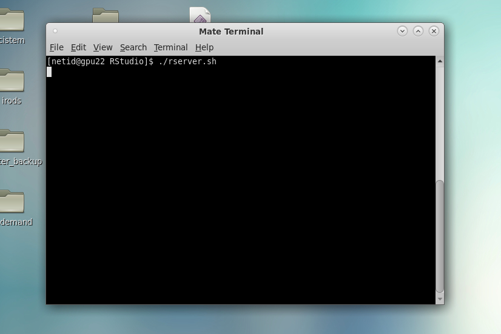
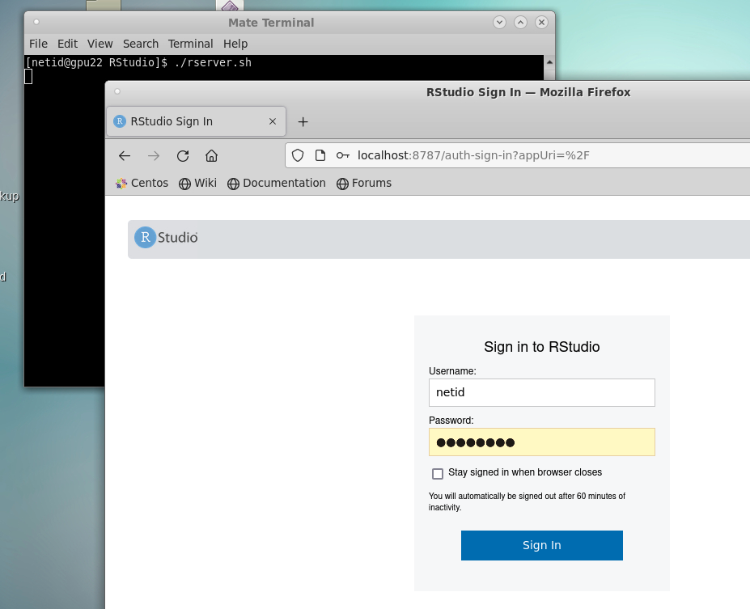
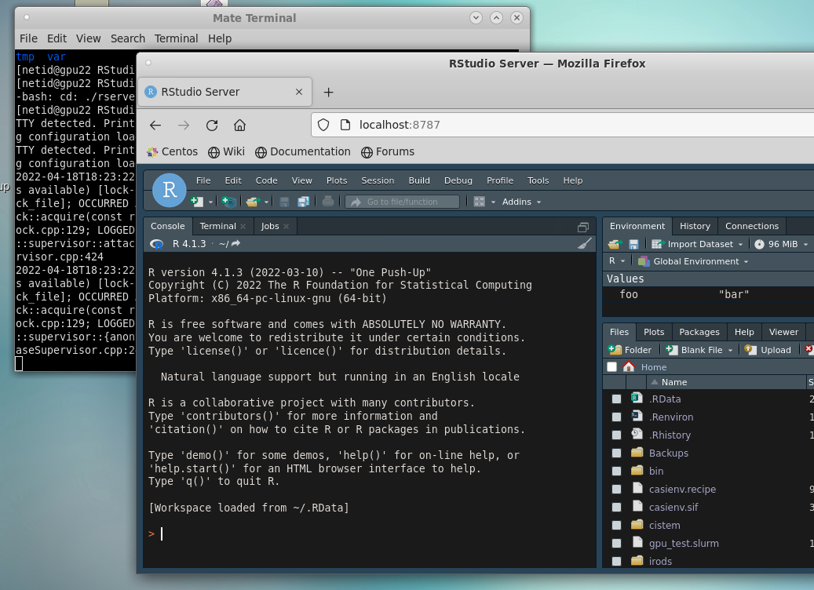
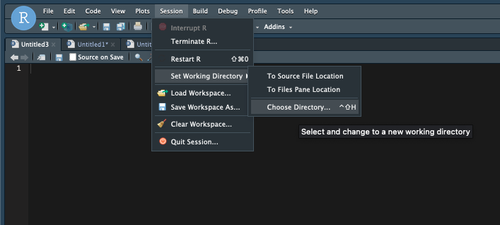
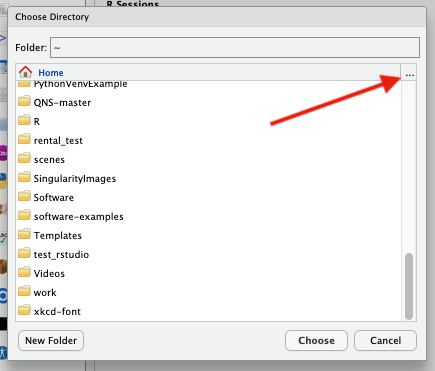
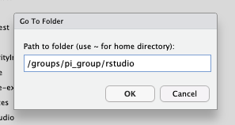

R
Examples
We have examples of using R in batch scripts available in our Job Examples section.
R is a popular language for data analysis and visualization. Different versions are available as software modules and we provide the graphical interface RStudio for R through our Open OnDemand web interface.
Similar to other languages that use package managers to install libraries contributed by the user community, we recommend you create and manage your own local libraries in your account. This ensures a stable global environment for all users and that you have the most control over your packages' versions and dependencies.
We provide instructions below for how to create, use, and switch between libraries as well as some debugging techniques for when package installations fail. We also provide some script examples (click the button in the banner at the top of this page) for submitting R scripts as batch jobs.
RStudio is a popular method for running analyses (and for good reason!), but for longer-running jobs (say, many hours or days) or workflows that need more flexibility in their environment (e.g., need access to software installed as system modules such as gdal), we recommend batch submissions.
Creating a Custom Library
R packages can be finicky. See Switching Between Custom Libraries and Common Problems below to help with frequent user issues.
Creating your first library
-
Make a local directory to store your packages
mkdir -p ~/R/library_4.2 -
Tell R where the directory is by creating an environment file1
echo 'R_LIBS=~/R/library_4.2/' >> ~/.Renviron -
That's it! Now you can install packages and they will be stored in the directory you just created. For example, to install and load the package
ggplot2:module load R/4.2 R install.packages("ggplot2")
Switching Between Custom Libraries
If you're using different versions of R, we recommend you use different libraries. See Common Problems below for more information. When creating a library, consider including pertinent information in the name such as R version. For example, if you wanted to switch to using R 4.1, you could create a directory called library_4.1 using:
mkdir -p ~/R/library_4.1
~/.Renviron file1 using a text editor such as nano:
nano ~/.environ
R_LIBS you previously had in your file. In this case, this value would look like:
R_LIBS=~/R/library_4.1
nano, use Ctrl+X and save at the prompt. Once your file is saved, you're ready to start installing files into your new library.
Common Problems and How to Debug Them
Working on a cluster without root privileges can lead to complications. For general information on package installations, see the r-bloggers documentation. For information on common installation problems on our clusters, see the section below with with suggested solutions:
One common reason R packages won't install is an altered environment. This can frequently be caused by the presence of Anaconda (or Miniconda) installed locally or initialized in your account from our system module.
When Anaconda is initialized, your .bashrc file is edited so that it becomes the first thing in your PATH variable. This can cause all sorts of mayhem. To get around this, you can either remove anaconda from your PATH and deactivate your environment, or comment out/delete the initialization in your ~/.bashrc if you want the change to be permanent.
Anaconda's initialization will tell it to automatically activate itself when you log in (when anaconda is active, you will see a "(conda)" preceding your command prompt). To disable this behavior, run the following from the command line in an interactive terminal session:
conda config --set auto_activate_base false
This will suppress anaconda's activation until you explicitly call conda activate and is a handy way to have more control over your environment. Once you run this, you will either need to log out and log back in again to make the changes live, or you can follow the instructions in the section below.
Sometimes turning off auto-activation won't be enough because Anaconda will still be present in your PATH. In this case, follow the instructions in the tab Temporary Removal or Permanent Removal
You can either use the command conda deactivate and then manually edit your PATH variable to remove all instances of anaconda/miniconda or copy the following and run it in your terminal:
conda deactivate > /dev/null 2>&1
IFS=':' read -ra PATHAR <<< "$PATH"
for i in "${PATHAR[@]}"
do if [[ $i == *"conda"* ]]
then echo "removing $i from PATH"
else NEWPATH=$i:$NEWPATH
fi
done
export PATH=$NEWPATH
module unload gnu8 && module load gnu8
unset NEWPATH
echo "Successfully removed conda"
Warning
Your .bashrc file configures your environment each time you start a new session. Be careful when editing it. You may consider making a backup before editing in case of unwanted changes.
Tip
Note: this change will remove anaconda from all future terminal sessions but will not make the changes live right away. To make the changes live, either follow the instructions above under Temporary Removal for removing anaconda from your PATH, or log out and back in again.
Start by opening the file ~/.bashrc. This can be done using the command nano
$ nano ~/.bashrc # opens your bashrc file to edit
Then comment out or delete the following lines and the text in between:
# >>> conda initialize >>>
...
# <<< conda initialize <<<
If Anaconda is not initialized in your account, there might be other culprits that are corrupting your environment.
Look for any of the file types listed below on your account. If you find them, try removing them (make a backup if you need them) and try the installation again.
- Saved R sessions. If this is the case, after starting a session, you will get the message "[Previously saved workspace restored]". Old sessions are saved as a hidden file
.RDatain your home directory. - Gnu compilers
- Windows files
Have you set up a custom library? Are you switching between custom libraries? You may want to check that everything is being loaded from the correct location and that there are not multiple or unwanted libraries being used.
Double-check that you have an .Renviron file. This is a hidden file located in your home directory and should set the path to your custom R library. If you do not have a custom library name set up, R will create one for you saved as something like:
~/R/x86_64-pc-linux-gnu-library
To set up/switch custom libraries, follow the instructions in the Creating a Custom R Library section above.
Because HPC is a cluster where multiple versions of R are available, users should take care to avoid mixing and matching. Because packages often depend on one another, libraries using different versions of R can turn into a tangled mess. Common errors that can crop up include: "Error: package or namespace load failed."
If you're switching R versions and have a custom library defined in your ~/.Renviron file, we recommend creating a new library.
RStudio is a great tool! Sometimes though, because it's a different environment than working directly from the terminal, you may run into problems. Specifically, these typically arise for installs or when using packages that rely on software modules.
Package Installations
If you're trying to install a package in an OOD RStudio session and you've tried all the troubleshooting advice above without luck, try starting R in the terminal and give the installation another try. You can access an R session in the terminal by first starting an interactive session, then using:
$ module load R/<version>
$ R
> install.packages("package_name")
Accessing Modules
RStudio does not have access to module load commands. This means that if you have a package that relies on a system module, the easiest option is to work through an interactive terminal session or to submit a batch script.
The alternative is to to modify your RStudio environment. For example, the library hdf5r relies on the hdf5 software module. If you try to load hdf5r, you will get an error complaining about a shared object file. To get around this, you will need to manually add that shared object to your environment using dyn.load(). For example:
> library("hdf5r") # without using dyn.load()
Error: package or namespace load failed for ‘hdf5r’ in dyn.load(file, DLLpath = DLLpath, ...):
unable to load shared object '/home/u21/sarawillis/R/lib_4.0/hdf5r/libs/hdf5r.so':
libhdf5_hl.so.100: cannot open shared object file: No such file or directory
> dyn.load("/opt/ohpc/pub/libs/gnu8/hdf5/1.10.5/lib/libhdf5_hl.so.100")
> library("hdf5r") # success!
>
Font Issues
RStudio uses Singularity under the hood. As a result, there are some environment differences that may affect correct font formatting in images generated in RStudio. If you are experiencing this, add the following line to the hidden file ~/.Renviron in your account (you can create this file if it does not exist):
FONTCONFIG_PATH=/opt/ohpc/pub/apps/fontconfig/2.14.2/etc/fonts
Using RStudio
We provide access to the popular development environment RStudio through our Open OnDemand web interface. This is a very handy tool, though it should be noted that it is a less flexible environment than using R from the command line. This is because RStudio sets its own environment which prevents easy access to third party software installed as system modules. These issues can sometimes worked around by following the guide in the debugging section above.
In some circumstances, you may want to run RStudio using your own Singularity image. For example, this allows access to different versions of R not provided when using our OOD application. We have some instructions on one way to do this below.
First, log into HPC using an Open OnDemand Desktop session and open a terminal. A Desktop session is the easiest solution to access RStudio since it eliminates the need for port forwarding.
In the terminal, make an RStudio directory where all of the necessary files will be stored. In this example, we'll be working in our home directory and will pull an RStudio image from Dockerhub to use as a test. If you're interested, you can find different RStudio images under rocker in Dockerhub.
mkdir $HOME/RStudio
cd $HOME/RStudio
singularity pull ./geospatial.sif docker://rocker/geospatial.sif
Next, create the necessary directories RStudio will use to generate temporary files. You will also generate a secure cookie key.
TMPDIR=$HOME/RStudio/rstudio-tmp
mkdir -p $TMPDIR/tmp/rstudio-server
uuidgen > $TMPDIR/tmp/rstudio-server/secure-cookie-key
chmod 600 $TMPDIR/tmp/rstudio-server/secure-cookie-key
mkdir -p $TMPDIR/var/{lib,run}
Next, create a file in your RStudio directory called rserver.sh and make it an executable:
touch rserver.sh
chmod u+x rserver.sh
USER OPTIONS to match your account if necessary. You can change PASSWORD to any password you'd like to use. Once you've entered the contents, save and exit:
#!/bin/bash
# --- USER OPTIONS --- #
WD=$HOME/RStudio
SIFNAME=geospatial.sif
PASSWORD="PASSWORD"
# --- SERVER STARTUP EXECUTED BELOW --- #
NETID=$(whoami)
TMPDIR=$WD/rstudio-tmp
SIF=$WD/$SIFNAME
PASSWORD=$PASSWORD singularity exec -B $TMPDIR/var/lib:/var/lib/rstudio-server -B $TMPDIR/var/run:/var/run/rstudio-server -B $TMPDIR/tmp:/tmp $SIF rserver --auth-none=0 --auth-pam-helper-path=pam-helper --server-user=$NETID --www-address=127.0.0.1
Now, in your desktop session's terminal, execute the rserver.sh script using ./rserver.sh

Next, open a Firefox window and enter localhost:8787 for the URL. In your browser, you will be prompted to log into your RStudio server. Enter your NetID under Username. Under Password, enter the password you defined in the script server.sh.

This will open your RStudio session:

Setting a New User State Directory
When working on a large project in RStudio, it is possible for your R session's data to fill up your home directory resulting in out-of-space errors (e.g. when trying to edit files, create new OOD sessions, etc). With the newest version of RStudio, you can find these saved session files under ~/.local/share/rstudio.
To preserve space in your home, you can specify a different directory by setting the environment variable RSTUDIO_DATA_HOME. To do this, open the hidden file ~/.bashrc and add:
export RSTUDIO_DATA_HOME=/path/to/new/directory
where /path/to/new/directory is the path to a different location where you have a larger space quota. For example, /groups/YOUR_PI/YOUR_NETID/rstudio_sessions.
Setting Your Working Directory in RStudio
If you'd like to change your working directory in an RStudio session, one option is to use setwd("/path/to/directory") in your terminal. Alternatively, if you'd like to see the contents of your new workspace in your file browser, you can navigate to the Session dropdown tab, navigate to Set Working Directory, and click Choose Directory...

From there, either navigate to the desired subdirectory, or click the ellipsis ... in the upper right to enter the full path to a directory.

Once you click OK and then Choose in the main file navigation window, R will change its working directory and you should see the contents of your new space under the Files browser in the lower right.

If you'd like to permanently set a different default working directory for all non-project RStudio sessions, navigate to the Tools dropdown tab and select Global Options...

This will open a menu where you can set your default working directory under General. Click the Browse... button to open a file navigator

To select a new working directory, either navigate to the subdirectory of your current working space, or select the ellipsis ... in the upper right to allow you to enter the full path.

The ellipsis option allows for more flexibility such as pointing to an /xdisk or /groups space.

Next, click OK, then Choose in the Choose Directory window, then Apply in the Global Options menu. This will set your working directory for your current session as well as all future sessions.

Popular Packages
Updates and Version Changes
We attempt to keep these instructions reasonably up-to-date. However, given the nature of ongoing software and package updates, there may be discrepancies due to version changes. If you notice any instructions that don't work that we have not caught, contact our consultants and they can help.
R Studio Version
If you use RStudio for your analyses, make sure that you load the same version of R when working with modules on the command line.
To install Seurat and SeuratDisk, you'll need to be in an interactive terminal session and not in an RStudio session. This is because these libraries depend on software modules that RStudio doesn't have access to (see Common Problems → OOD RStudio Issues above for more information).
You will also need to make sure Anaconda is completely removed from your environment prior to the install. If you have Anaconda initialized in your account, see the code block under Resolving Anaconda Issues → Temporary Removal above.
(elgato) [netid@junonia ~]$ interactive -a your_group
[netid@cpu38 ~]$ module load R/<version>
[netid@cpu38 ~]$ module load gdal glpk libpng # software modules that are needed for Seurat's dependencies
[netid@cpu38 ~]$ R
> install.packages("Seurat")
If you want to load this software in an RStudio session, you will first need to use the following dyn.load commands. When using the dyn.loads in RStudio, you will need to be careful to run them in the order shown below, otherwise you may wind up with "Undefined symbol" errors. If you repeatedly run into library errors working in RStudio, you might consider converting your workflow to a batch script that you can submit through the command line. See the section Example R Scripts above for more information.
> dyn.load("/opt/ohpc/pub/apps/glpk/5.0/lib/libglpk.so.40")
> dyn.load("/opt/ohpc/pub/apps/gdal/3.3.2/lib/libgdal.so.29")
> dyn.load("/opt/ohpc/pub/apps/proj/7.2.1/lib/libproj.so.19")
> library(Seurat)
SeuratDisk is similar to Seurat with a few more dependencies. It also includes the line unset CPPFLAGS due to a reported issue with the dependency hdf5r:
(elgato) [netid@junonia ~]$ interactive -a your_group
[netid@cpu1 ~]$ module load R/<version> gdal geos hdf5/1.10.5 libpng/1.6.37 glpk
[netid@cpu1 ~]$ unset CPPFLAGS
[netid@cpu1 ~]$ R
> install.packages("Seurat")
> install.packages("remotes")
> remotes::install_github("mojaveazure/seurat-disk")
Then, to load the software in RStudio:
> dyn.load("/opt/ohpc/pub/apps/glpk/5.0/lib/libglpk.so.40")
> dyn.load("/opt/ohpc/pub/apps/proj/7.2.1/lib/libproj.so.19")
> dyn.load("/opt/ohpc/pub/apps/gdal/3.3.2/lib/libgdal.so.29")
> dyn.load("/opt/ohpc/pub/libs/gnu8/hdf5/1.10.5/lib/libhdf5_hl.so.100")
> library(Seurat)
> library(SeuratDisk)
To install Monocle3, you'll need to be in an interactive terminal session and not in an RStudio session. This is because it depends on software modules that RStudio doesn't have access to (see Common Problems → OOD RStudio Issues above for more information).
You will also need to make sure Anaconda is completely removed from your environment prior to the install. If you have Anaconda initialized in your account, see the code block under Resolving Anaconda Issues → Temporary Removal above.
When using the dyn.loads in RStudio, you will need to be careful to run them in the order shown below, otherwise you may wind up with "Undefined symbol" errors. If you repeatedly run into library errors working in RStudio, you might consider converting your workflow to a batch script that you can submit through the command line.
Monocle3's documentation includes steps that you can use for a successful installation.
(elgato) [netid@junonia ~]$ interactive -a your_group
[netid@cpu1 ~]$ module load R/<version> gdal
[netid@cpu1 ~]$ R
> install.packages("BiocManager")
> BiocManager::install(c('BiocGenerics', 'DelayedArray', 'DelayedMatrixStats',
'limma', 'lme4', 'S4Vectors', 'SingleCellExperiment',
'SummarizedExperiment', 'batchelor', 'HDF5Array',
'terra', 'ggrastr'))
> install.packages("devtools")
> devtools::install_github('cole-trapnell-lab/monocle3')
Then, to load Monocle3 in RStudio:
dyn.load("/opt/ohpc/pub/apps/gdal/3.3.2/lib/libgdal.so.29")
dyn.load("/opt/ohpc/pub/apps/proj/7.2.1/lib/libproj.so.19")
library(monocle3)
-
The file
~/.Renvironis a "dot" file which means it does not show up when you run a standardls. Files that start with a.are hidden and are typically used for important configuration information. This particular file can be used to control your R environment for each subsequent time you start a session. All the echo command does is append the lineR_LIBS=~/R/libraryto this file. ↩↩